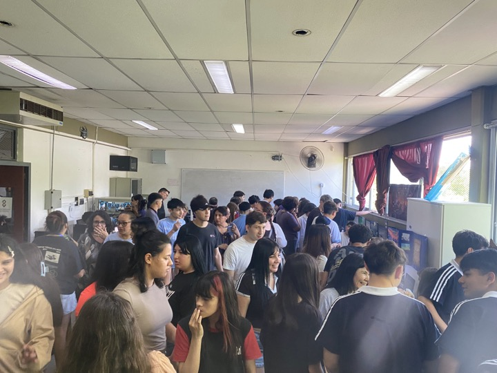
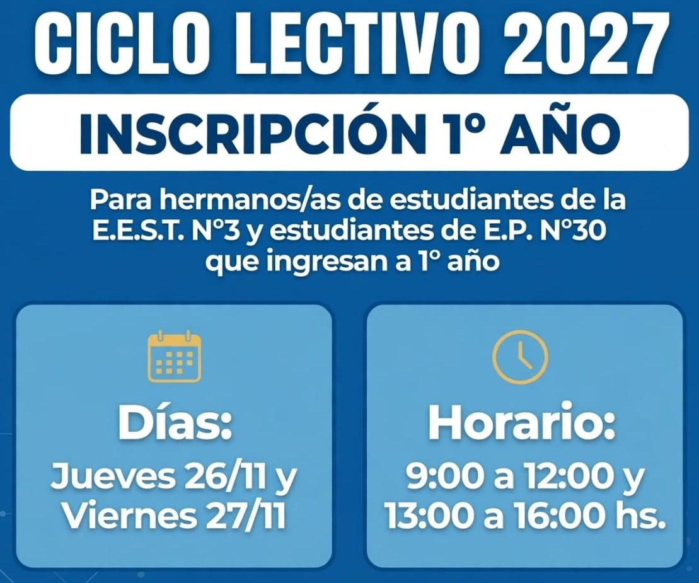
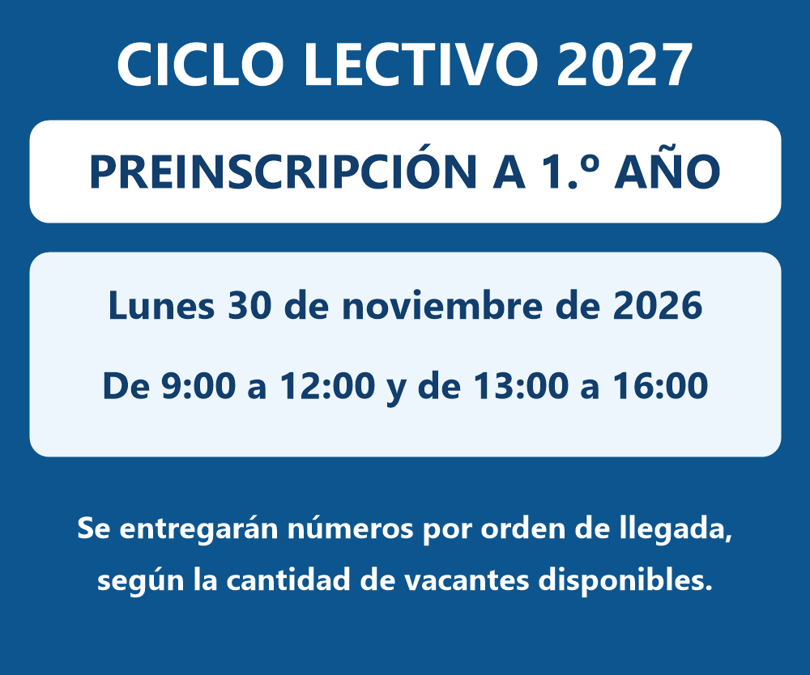
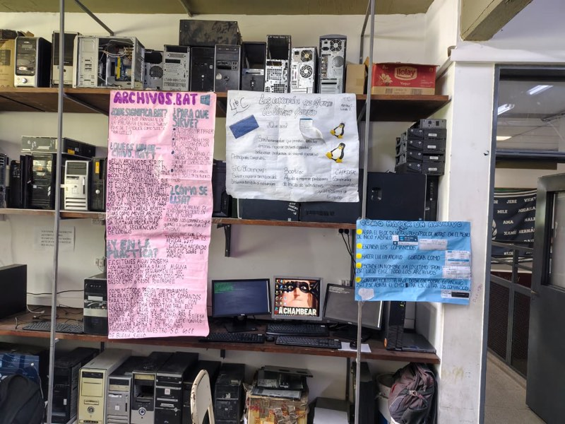

Expo Técnica 2026
Los estudiantes presentaron sus proyectos ante las familias y la comunidad el viernes 20 de noviembre.
Leer la nota y ver las fotosE.E.S.T. N.º 3 Víctor Mercante · Hurlingham
Educación técnica pública. Formación en Informática Profesional y Personal.

Comunidad educativa
Los estudiantes presentaron sus proyectos ante las familias y la comunidad el viernes 20 de noviembre.
Leer la nota y ver las fotosPara hermanos y hermanas de estudiantes de la E.E.S.T. N.º 3 y estudiantes de la E.P. N.º 30 que ingresan a 1.º año.
y , de 9:00 a 12:00 y de 13:00 a 16:00.

, de 9:00 a 12:00 y de 13:00 a 16:00.
Se entregarán números por orden de llegada, según la cantidad de vacantes disponibles.

Diciembre de 2026, de 9:00 a 12:00 y de 13:00 a 16:00.
En biblioteca se debe comprar la planilla completa, las autorizaciones de imagen y de retiro, y el cuaderno de comunicados con folio oficio.
El Técnico en Informática Profesional y Personal estará capacitado para asistir al usuario de productos o servicios informáticos, brindando servicios de instalación, capacitación, sistematización, mantenimiento primario, resolución de problemas derivados de la operatoria, y apoyo a la contratación de productos o servicios informáticos.



Mantener componentes de equipos de computación y comunicaciones, programas y sistemas.
La tecnicatura se estructura en 3 niveles formativos: Formación General, Formación Científico Tecnológica y Formación Técnico Específica.
35 horas semanales
| Materia | CHT |
|---|---|
| FORMACIÓN GENERAL | |
| Literatura | 72 |
| Inglés | 72 |
| Educación Física | 72 |
| Salud y Adolescencia | 72 |
| Historia | 72 |
| Geografía | 72 |
| FORMACIÓN CIENTÍFICO TECNOLÓGICA | |
| Matemática Ciclo Superior | 144 |
| Física | 108 |
| Química | 72 |
| FORMACIÓN TÉCNICO ESPECÍFICA | |
| Lab. de Programación | 72 |
| Lab. de Hardware | 144 |
| Lab. de Sistemas Operativos | 144 |
| Lab. de Aplicaciones | 72 |
35 horas semanales
| Materia | CHT |
|---|---|
| FORMACIÓN GENERAL | |
| Literatura | 72 |
| Inglés | 72 |
| Educación Física | 72 |
| Política y Ciudadanía | 72 |
| Historia | 72 |
| Geografía | 72 |
| FORMACIÓN CIENTÍFICO TECNOLÓGICA | |
| Análisis Matemático | 144 |
| Sistemas Digitales | 108 |
| Teleinformática | 144 |
| FORMACIÓN TÉCNICO ESPECÍFICA | |
| Lab. de Programación | 72 |
| Lab. de Hardware | 144 |
| Lab. de Sistemas Operativos | 144 |
| Lab. de Aplicaciones | 72 |
35 horas semanales
| Materia | CHT |
|---|---|
| FORMACIÓN GENERAL | |
| Literatura | 72 |
| Inglés | 72 |
| Educación Física | 72 |
| Filosofía | 72 |
| Arte | 72 |
| FORMACIÓN CIENTÍFICO TECNOLÓGICA | |
| Matemática Aplicada | 72 |
| Sistemas Digitales | 108 |
| Investigación Operativa | 144 |
| FORMACIÓN TÉCNICO ESPECÍFICA | |
| Lab. de Programación | 72 |
| Lab. de Hardware | 144 |
| Lab. de Sistemas Operativos | 144 |
| Lab. de Aplicaciones | 72 |
21 horas semanales · sin Prácticas Profesionalizantes
| Materia | CHT |
|---|---|
| FORMACIÓN GENERAL | |
| Prácticas Profesionalizantes | 200 |
| FORMACIÓN CIENTÍFICO TECNOLÓGICA | |
| Emprendimientos Productivos | 72 |
| Evaluación de Proyectos | 72 |
| Modelos y Sistemas | 72 |
| FORMACIÓN TÉCNICO ESPECÍFICA | |
| Proyecto, Diseño e Implementación | 144 |
| Instalación, Mantenimiento y Reparación | 144 |
| Instalación, Mantenimiento y Reparación de Redes | 144 |
Nuestro equipo de conducción, junto a un amplio cuerpo de profesionales, afronta los desafíos de una industria en constante cambio.
Directora
Vicedirector
Vicedirectora
Jefa de Área
Email: eest3hurlingham@abc.gob.ar
Dirección: José de Andonaegui 2295 / Torello 3054 — B1686 Hurlingham, Buenos Aires